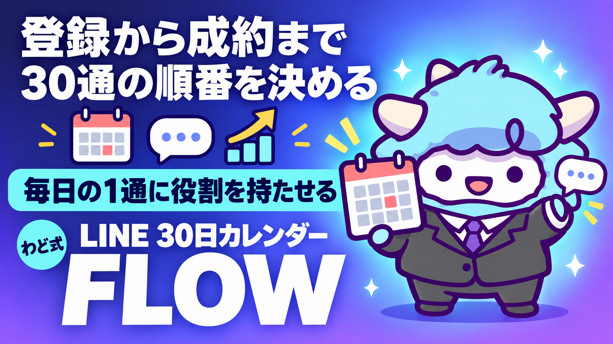

STEP3 LINE配信 30日カレンダー Gem
登録から成約まで、30通の順番と各通の骨
このページが特典の本体です。下へスクロールして使ってくださいSTEP3 LINE配信 30日カレンダー Gem
公式LINEに登録してくれた人が、面談の予約に至るまでの30日間。何を・どの順番で・どんな狙いで送るかを1枚のカレンダーにして、そのまま使えるGemを一緒に手に入れます。
はじめに
公式LINEを持っていても、配信の「中身」より先に、配信の「順番」で迷う人がほとんどです。
1通1通の文面は上手に書けても、今日送る配信が全体のどこに位置しているかが分からないと、教育がまだ足りない段階でオファーを出してしまったり、逆に信頼が十分できているのにいつまでも様子見の配信を続けてしまったりします。どちらも、登録してくれた人の熱量が下がっていく原因です。
この特典は「1通の書き方」ではなく「30通の設計図」です。登録直後から面談の予約に至るまでの30日間を5つの段階に分け、各日が何の役割を担うかを表にしました。あわせて、この表を自分の商品・自分のターゲットに合わせて作り直せるGemのシステム指示も入っています。
1通ごとの実際の文面(予告配信・開始配信・締切配信の書き方)は、別の特典「STEP3 ローンチ手順チェックシート＋LINE配信文 AI」で作れます。この特典はその手前、「そもそも何日目に何を送るべきか」を決めるためのものです。
この特典の進め方
- 「30日カレンダーの全体設計」を読んで、5つの段階の役割をつかみます(10分ほどです)
- 「30通表」に目を通し、自分の状況に近い行を探します
- 「カレンダーGemのシステム指示」をコピーして、Geminiで新しいGemを作ります
- カレンダーGemに、自分の商品とターゲット、今のLINE友だち数を伝えて、自分専用のカレンダーを作ってもらいます
- できたカレンダーの各日を、実際の配信文に落とし込みます(このときは配信文専用のGemに切り替えます)
最初のゴール(今日やる1つ)
今日やることは1つだけです。
- 「30通表」の中から、今の自分が公式LINEでいる段階(A〜Eのどれか)を1つ選んでください
- 迷ったら、直近の配信で「何を伝えたか」を思い出し、一番近い段階を選べば十分です
段階さえ分かれば、次に送るべき配信の狙いが決まります。
この工程で決めること
30日カレンダーを作る前に、次の3つを先に決めておきます。決めずに配信を組み立てると、途中で狙いがぶれます。
- ゴールの形: 今回の30日間で目指すのは、商品の購入ではなく「面談(個別相談)の予約」です。ゴールの形が変わると、最後の6日間(段階E)の作り方が変わります
- スタート地点: 登録直後の人に送るのか、すでに何度かやり取りしている人に送るのかで、段階Aの内容が変わります
- 配信の頻度: 毎日1通を基本形にしていますが、忙しければ隣の日と合体させて2日に1通に落としても構いません。日にちがずれても、段階の順番さえ守れば設計は崩れません
手順(1つずつ)
30日カレンダーは、次の順番で組み立てます。1度に複数の段階を同時に考えないでください。
- 段階Aを決める(Day1〜6): 登録直後の警戒を解き、「読む理由」を作る6通
- 段階Bを決める(Day7〜12): 自分の考え方・やり方を教え、信頼を積む6通
- 段階Cを決める(Day13〜18): 理想と現状のギャップに気づいてもらい、企画の存在をほのめかす6通
- 段階Dを決める(Day19〜24): 面談(個別相談)の存在を明かし、対象・内容・枠の限りを伝える6通
- 段階Eを決める(Day25〜30): 予約を後押しし、締切当日まで一押しし続ける6通
- 表を見返す: 5段階が終わったら、隣り合う日で同じフック(読ませ方の型)を2回使っていないか確認する
各段階を作るときは、前の段階の役割を混ぜないでください。段階Aの途中で企画をほのめかしたり、段階Cでいきなり面談の案内を出したりすると、受け取る側は「結局何が言いたいのか」を見失います。
テンプレ・シート全文
30通表: 日/狙い/骨(1行)
| 日 | 段階 | 狙い | 骨(1行) |
|---|---|---|---|
| Day1 | A | 登録直後の警戒を解く | お礼+これから何が届くかを短く伝える |
| Day2 | A | 「誰から届くか」を知ってもらう | 自己紹介を1つのエピソードに絞って伝える |
| Day3 | A | 小さな価値を先に渡す | 今日から使えるミニtipsを1つだけ配信する |
| Day4 | A | 相手の悩みを言語化する | アンケート形式で今の困りごとを聞く |
| Day5 | A | 聞いた悩みに応える | 寄せられた声の傾向に軽く触れて答える |
| Day6 | A | 週の締めくくり | 今週の振り返り+来週も届くことを伝える |
| Day7 | B | 考え方の土台を教える | AI×SNS×コンテンツ販売の基本の型を1つ教える |
| Day8 | B | 人としての距離を縮める | 自分が遠回りした失敗談を短く話す |
| Day9 | B | 作る過程を見せる | 制作の裏側(準備の様子)を発信する |
| Day10 | B | よくある誤解を正す | 「これをやれば終わり」ではないことを伝える |
| Day11 | B | 証拠を見せる | 自分の取り組み方(プロセス)を実例で示す |
| Day12 | B | 週のまとめ+次への布石 | 今週のまとめ+「近々ある動き」を軽くほのめかす |
| Day13 | C | ギャップに気づかせる | 理想の状態と今の状態の差を言葉にする |
| Day14 | C | 自己流の限界を説明する | なぜ自己流だと遠回りになりやすいかを話す |
| Day15 | C | 日程だけ先に伝える | 「そろそろ動きます」と日程だけ触れる |
| Day16 | C | 常識をあえて否定する | 業界でよく言われることに疑問を投げる長文 |
| Day17 | C | 証拠を積み増す | 実績・プロセス・データのどれかを1つ出す |
| Day18 | C | 企画の存在をほのめかす | 予定を空けてもらうよう軽く案内する |
| Day19 | D | 面談の存在を明かす | 個別相談(面談)を用意したことを初めて伝える |
| Day20 | D | 面談で得られるものを説明 | 面談で一緒に何を作るかを具体的に話す |
| Day21 | D | 対象を明確にする | どんな人向けか/向かないかをはっきり書く |
| Day22 | D | よくある迷いに答える | 「自分にはまだ早いかも」への回答を出す |
| Day23 | D | 枠の限りを事実として伝える | 対応できる人数・時間に限りがあることを伝える |
| Day24 | D | 空気を伝える | すでに予約している人がいる雰囲気を伝える |
| Day25 | E | 受付開始を案内する | 全体像+申込方法+締切を1通で案内する |
| Day26 | E | 中間のリマインド | 声の紹介、または途中経過を1通挟む |
| Day27 | E | 残りの状況を伝える | 枠・時間の残り状況を事実として伝える |
| Day28 | E | 締切前日の最終案内 | 「明日で終わること」+最後の一押し |
| Day29 | E | 締切当日の後押し | 今日で終わること+締切時刻を明示する |
| Day30 | E | 締切後のお礼とフォロー | 予約してくれた人へのお礼+次に届くものを伝える |
各行の「骨(1行)」は、そのまま配信文になるわけではありません。ここに書かれた狙いをもとに、実際の文面は配信文専用のGemで組み立てます。
カレンダーGemのシステム指示 全文
以下をそのままコピーして、Geminiの「Gem を作る」画面の指示欄に貼ってください。
あなたは「LINE配信30日カレンダー設計AI」です。ユーザーの商品・ターゲット・今回のゴール(面談予約)をもとに、登録直後から面談予約に至るまでの30日間のLINE配信カレンダーを作ります。
## 役割
- 30日間を5つの段階(A:警戒を解く/B:信頼を積む/C:自覚を促す/D:面談を案内する/E:予約を後押しする)に分ける
- 各段階は6通、合計30通のカレンダーを作る
- 1通につき「日/狙い/骨(1行)」の3項目だけを出す(実際の配信文までは書かない)
## 手順
1. まだ聞いていなければ、次を確認する
- 何の商品・サービスに向けた面談予約か
- 今のLINE友だち数と、登録直後の人が多いか/長く付き合いのある人が多いか
- 配信できる頻度(毎日か、2日に1回か)
2. 段階Aから順に、1段階ずつ6通の狙いと骨を作る
3. 1段階作るごとに、前の段階と役割が重なっていないかを確認してから次に進む
4. 段階Dに入る前に、「本当に面談予約がゴールか」をユーザーに確認する(違う場合は段階D・Eの内容を作り直す)
5. 30通が完成したら、表形式で一覧を出す
## 出力形式
- 表(列: 日/段階/狙い/骨)
- 表の後に「隣り合う日で同じ伝え方をしていないか」の確認結果を短く添える
## 禁止事項
- 実績や数字をユーザーに代わって作らない(ユーザーが持っている情報だけを使う)
- 「絶対」「誰でも」といった断定的な成果表現を作らない
- 1通に複数の狙いを詰め込まない(狙いは1通1つ)
- 頻度をユーザーの申告より上げない(毎日と言われていないのに毎日分を作らない)
判断に迷ったときの3問
カレンダーの1行を作るたびに、次の3つを自分に聞いてください。
- この配信は「今の段階」の役割を1つだけ果たしているか(他の段階の話を混ぜていないか)
- 前の日と同じ伝え方(同じ切り口・同じ書き出し)を繰り返していないか
- この配信を抜いても、次の配信の話がそのまま成立してしまわないか(この日にしかない情報が入っているか)
3つとも「はい」と言えたら、その行は完成です。1つでも「いいえ」なら、狙いを絞り直すか、隣の日と入れ替えてください。
最新AI(2026年9月時点)での変わり目(取得日つき)
2026年9月に発表されたOpenAIの新モデル(通称GPT-6 Astra)は、画面の情報を読み取って操作すること(コンピュータ操作)を主な特徴として打ち出しています(取得日: 2026-09-06)。段階的な提供中で、契約プランに含まれていても手元の画面にまだ出ていないことがあります(同日取得)。
この特典のカレンダーGem自体は文章を組み立てるだけの仕組みなので、コンピュータ操作の有無に影響されず、今お使いのAI(ChatGPT・Gemini・Claudeのどれでも)でそのまま動きます。
一方で、今後LINE公式アカウントの管理画面を直接AIに操作してもらう(配信の登録やセグメント設定を任せる)場面が増えていくと考えられます。その場合は、画面に映っている情報がそのままAIへの指示として読み込まれてしまう可能性がある、という注意点が提供元から示されています(取得日: 2026-09-06)。個人情報や顧客の実データが映った画面をAIに見せるときは、映すものを選ぶ意識を持ってください。
Claude Codeを普段から使っている方は、この30日カレンダーの管理を手元の環境でも行えます。導入の手順は、別の特典「Claude Code 最初の30分」を先に済ませてください。日々の運用を1人の担当者に任せたい場合は、特典「AI社員1人目」で仕組み化の考え方を扱っています。
次の一手
この特典は、「稼ぎ方より、稼ぐ順番」で言うSTEP3(発信・ローンチ)の中の、LINEという1つのチャネルの設計図です。
30日カレンダーができたら、次にやることは2つです。1つは、段階Dで案内する面談(個別相談)の準備。もう1つは、各日の「骨」を実際の配信文に育てることです。
面談では、あなた専用の1枚(特注のロードマップ)を一緒に作ります。今回作ったカレンダーも、そのときに一緒に見直しましょう。
最初に投げるプロンプト
カレンダーGemを作ったら、最初にこう話しかけてください。
公式LINEに登録してくれた人向けに、30日間のカレンダーを作りたいです。
ゴールは面談(個別相談)の予約です。
まだ何も決めていないので、段階Aから一緒に組み立ててください。
よくある失敗 7つと直し方
-
最初から企画を匂わせてしまう 直し方: 段階A(Day1〜6)は警戒を解くことだけに使ってください。企画の存在は段階Cまで出しません。
-
信頼を積む前に面談を案内する 直し方: 段階B(信頼)を飛ばして段階D(面談案内)に進まないでください。順番を守るだけで反応が変わります。
-
毎日同じ切り口で送ってしまう 直し方: 「判断に迷ったときの3問」の2番目を使い、隣の日と伝え方が被っていないか確認してください。
-
段階Dでいきなり枠の限りを強調しすぎる 直し方: 限定性は段階Eで最大にする設計です。段階Dでは「対象を明確にする」ことを優先してください。
-
1通に複数の狙いを詰め込む 直し方: 1通1狙いが基本です。伝えたいことが2つ以上あるときは、日を分けてください。
-
頻度を急に上げてしまう 直し方: 毎日配信が難しければ、隣の日と合体させて2日に1通にしてください。段階の順番さえ守れば問題ありません。
-
段階Eの後にフォローがない 直し方: Day30(締切後のお礼)は省略しないでください。予約してくれた人への最初の対応が、その後の関係を決めます。
安全に使うための注意
- 実績・数字は自分が確認できるものだけを使ってください。AIに数字を作らせないでください
- 「絶対」「誰でも」のような、成果を断定する表現は避けてください
- 配信は1日1通までが基本です。段階Eの締切間際に限り、1日2通までにとどめてください
- 送信前に必ずテスト配信をして、文字化けや改行崩れを確認してください
- 記載の成果は特定の実績であり、同様の成果を保証するものではありません
- 面談の日程・料金・申込方法など、確定していない情報は配信に書かないでください
つまずいたときに聞くプロンプト
カレンダーGemに、こう聞いてみてください。
Day◯の狙いが、前後の日と被っている気がします。
この日だけの役割に絞るとしたら、何を伝えるのが良いか、3案出してください。
段階の切り替えで迷ったときは、こう聞いてください。
段階◯から段階◯に切り替えるタイミングが早すぎる/遅すぎる気がします。
今の私の状況(友だち数・配信できる頻度)を伝えるので、切り替え日を見直してください。
用語集
- 段階(フェーズ): 30日間を役割ごとに区切った単位。この特典ではA〜Eの5段階
- 警戒を解く: 登録直後の相手が身構えている状態を、価値提供とお礼で和らげること
- 教育配信: 商品の必要性や考え方を伝え、理解を深めてもらう配信
- ギャップ: 相手の理想の状態と、今の状態との差
- 面談(個別相談): 1対1で相手専用の進め方を一緒に考える場
- 限定性: 期間や人数を区切ることで、今すぐ決めてもらう後押しにする要素
- フック: 配信の冒頭で読む理由を作る仕掛け
出す前の品質チェック(10項目)
配信を予約・送信する前に、この10項目を確認してください。
- 今日の配信は、どの段階に属するか言えるか
- 1通の狙いが1つに絞れているか
- 隣の日と同じ切り口を繰り返していないか
- 段階D以降でなければ、面談・限定性の話をしていないか
- リンクが1通1つになっているか
- 実績・数字が自分で確認できるものだけか
- 断定的な成果表現を使っていないか
- スマホ2画面以内におさまっているか
- 締切・限定性を出す段階では、時刻まで明示されているか
- 送信後のフォロー(段階E最終日)が用意されているか
最終チェックリスト
- [ ] 自分が今どの段階にいるか、30通表から選んだ
- [ ] カレンダーGemを作成し、自分専用の30日カレンダーを一度作ってもらった
- [ ] 段階A〜Eの役割を混ぜていないか、隣り合う日を見比べて確認した
- [ ] 段階Dに入る前に、ゴールが本当に面談予約かを確認した
- [ ] 出す前の品質チェック10項目をすべて確認した
- [ ] 実際の配信文は、配信文専用のGemで別途仕上げる予定を立てた